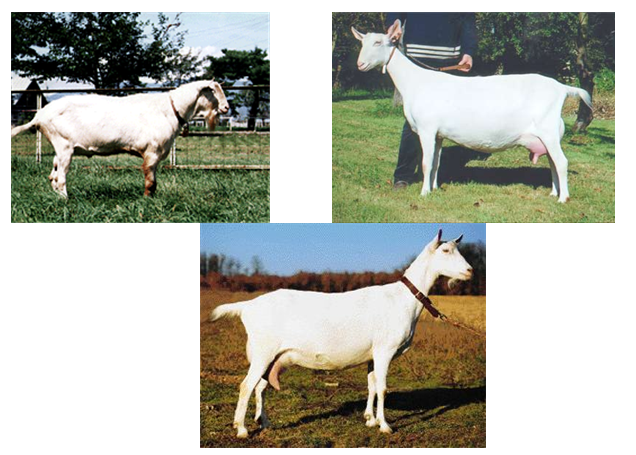
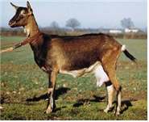
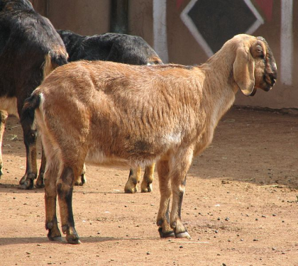

ছাগলের জাতগুলিকে তাদের উদ্দেশ্য অনুসারে বিস্তৃতভাবে দুগ্ধজাত জাত, আঁশযুক্ত জাত এবং মাংসজাত হিসাবে শ্রেণীবদ্ধ করা যেতে পারে। দুগ্ধজাত জাতগুলির মধ্যে রয়েছে সানেন, ব্রিটিশ সানেন, জাপানি সানেন, টোগেনবার্গ, আলপাইন, নুবিয়ান এবং ননসান দুগ্ধজাত ছাগল। আঁশযুক্ত জাতগুলির মধ্যে রয়েছে অ্যাঙ্গোরা এবং কাশ্মির ছাগল। মাংসজাত জাতগুলির মধ্যে রয়েছে জাপানি স্থানীয় জাত এবং চীনা স্থানীয় ছাগল, স্থানীয়ভাবে লালিত বিভিন্ন আঞ্চলিক স্থানীয় ছাগল।
সানেন জাতটি বিশ্বের সবচেয়ে প্রতিনিধিত্বমূলক এবং ব্যাপকভাবে বিতরণ করা দুগ্ধজাত ছাগলের জাত। সুইজারল্যান্ডের বার্ন ক্যান্টনের সানেন উপত্যকা থেকে উদ্ভূত, এটি ১৯৩০ সাল থেকে মার্কিন যুক্তরাষ্ট্র এবং ইউরোপ হয়ে বিশ্বব্যাপী ছড়িয়ে পড়েছে।
এদের চকচকে, ছোট, সাদা বা ক্রিমি-সাদা লোম থাকে যা শরীরের সাথে খুব ঘনিষ্ঠভাবে লেগে থাকে। পুরুষ এবং মহিলা উভয়েরই দাড়ি থাকে, পুরুষদের লম্বা এবং পূর্ণ দাড়ি থাকে। এদের দেহ বড়, মাঝারি আকারের মাথা এবং প্রশস্ত কপাল, হলুদ চোখ, সাদা ভ্রু, খাড়া কান এবং হলুদ খুর থাকে।
স্ত্রী পাখিদের বুক প্রশস্ত এবং পিঠ অনুভূমিক এবং তাদের ডাঁটা প্রশস্ত। তাদের থলি লম্বাটে এবং পেটের সাথে সংযুক্ত, টিটগুলি বাইরের দিকে তির্যক থাকে - এটি কাম্য বলে মনে করা হয়। সামগ্রিকভাবে, তাদের শরীরের আকৃতি একটি দীর্ঘ ত্রিভুজ, যা দুগ্ধজাত প্রাণীর বৈশিষ্ট্য।
একটি চমৎকার সানেন স্তন্যপান করানোর সময়কালে (২৭০-৩৫০ দিন) প্রায় ২০০০ কেজি দুধ উৎপাদন করতে পারে, যার গড় গড় ৫০০ থেকে ১০০০ কেজি পর্যন্ত হয়। সর্বোচ্চ দৈনিক দুধ উৎপাদন ৩-৫ কেজি পর্যন্ত পৌঁছাতে পারে এবং গড় দৈনিক ফলন প্রায় ২ কেজি।
মহিলাদের ওজন প্রায় ৫০-৬৫ কেজি এবং পুরুষদের ৭০-৯০ কেজি। উচ্চতা মহিলাদের জন্য প্রায় ৭৫ সেমি এবং পুরুষদের জন্য ৮৫ সেমি। সানেন জাতটি ব্রিটিশ সানেন, জার্মান সানেন এবং জাপানি সানেন এর মতো অন্যান্য দুগ্ধজাত জাতগুলির জন্য জেনেটিক ভিত্তি হিসেবে কাজ করেছে।
ব্রিটিশ সানেন হল একটি উন্নত জাত যা ব্রিটিশ দেশীয় ছাগলকে সানেন জাতের সাথে ক্রসব্রিডিং করে তৈরি করা হয়েছে। এর আবরণ সাদা, ছোট এবং চকচকে। খাঁটি সানেন ছাগলের তুলনায়, এর পা লম্বা, দেহ বৃহত্তর এবং দুধ উৎপাদনে উন্নত।
১৯২৫ সালে ব্রিটিশ ছাগল সমিতি কর্তৃক এটিকে আনুষ্ঠানিকভাবে একটি জাত হিসেবে স্বীকৃতি দেওয়া হয়। এই জাতটি তার বিনয়ী স্বভাব এবং রুক্ষ ভূখণ্ডে বেড়ে ওঠার ক্ষমতার জন্য পরিচিত। দেখতে সানেনের মতো হলেও, এর মোট দুধের উৎপাদন প্রায় ২,৬০০ কেজি, যার গড় দৈনিক উৎপাদন ৬-৮ কেজি এবং মাখনের চর্বির পরিমাণ প্রায় ৩.৪৮%। এটি বিভিন্ন ইউরোপীয় দেশে রপ্তানি করা হয়েছে এবং ছাগলের প্রজনন উন্নতিতে অবদান রেখেছে।
জাপানের কিউশু অঞ্চলের স্থানীয় ছাগলদের বারবার পুরুষ বা স্ত্রী সানেন ছাগলের সাথে ক্রসব্রিডিং করে জাপানি সানেন তৈরি করা হয়েছিল। ১৯৪৯ সালে জাপান ছাগল সমিতি প্রতিষ্ঠার পর এটির আনুষ্ঠানিক নামকরণ করা হয় "জাপানি সানেন"।
দেখতে এটি সানেনের সাথে খুব মিল। গড় উচ্চতা স্ত্রী পাখির জন্য প্রায় ৭৫ সেমি এবং পুরুষ পাখির জন্য ৮৫ সেমি। গড় ওজন স্ত্রী পাখির জন্য প্রায় ৫২ কেজি এবং পুরুষ পাখির জন্য ৬৪ কেজি। মোট দুধ উৎপাদন প্রায় ৩০০-৫০০ কেজি, স্তন্যপানকাল ১৫০-২৫০ দিন।

টোগেনবার্গ প্রজাতির উৎপত্তি উত্তর-পূর্ব সুইজারল্যান্ডের টোগেনবার্গ উপত্যকা থেকে। এর গায়ের রঙ ফন বা চকলেট রঙের, ছোট থেকে মাঝারি দৈর্ঘ্যের লোম শরীরের সাথে সমতল থাকে। কানের চারপাশে বা ডগায় সাদা দাগ থাকে এবং চোখের উপর থেকে মুখের দিকে দুটি স্পষ্ট সাদা ডোরা থাকে।
এই প্রজাতির পাখির মাথা চওড়া, চোখ তুলনামূলকভাবে বড় এবং কান খাড়া। পায়ের ভেতরের দিক, পাশাপাশি বাহু এবং পাছার নীচের অংশ সাদা। লেজের একপাশে একটি সাদা ত্রিভুজাকার দাগও থাকে।
আকারের দিক থেকে, স্ত্রী পাখির ওজন প্রায় ৪৫-৫০ কেজি এবং পুরুষ পাখির ওজন ৬০-৮০ কেজির মধ্যে। উচ্চতা আলপাইন প্রজাতির তুলনায় কিছুটা কম, স্ত্রী পাখির উচ্চতা প্রায় ৭০ সেমি এবং পুরুষ পাখির উচ্চতা প্রায় ৯০ সেমি।
টোগেনবার্গ ছাগলের উন্নত থলি এবং স্তনবৃন্ত থাকে, যদিও তাদের দুধ উৎপাদন সানেন জাতের তুলনায় সামান্য কম। স্তন্যপান করানোর সময়কাল ২৪০-২৮০ দিন স্থায়ী হয়, মোট দুধ উৎপাদন প্রায় ৬০০-৭০০ কেজি এবং মাখনের চর্বির পরিমাণ ৩.৭%।
ফরাসি আল্পাইন হল একটি উন্নত জাত যা ফরাসি আল্পস এবং সুইজারল্যান্ডের পাহাড়ি অঞ্চলে ব্যাপকভাবে পালিত দেশীয় ছাগল থেকে উদ্ভূত। এই জাতটির কোনও নির্দিষ্ট কোটের রঙ নেই এবং এটি সাদা, বাদামী, কালো, লাল, অথবা এই রঙের যেকোনো সংমিশ্রণে দেখা যেতে পারে।
এরা তাদের বিনয়ী মেজাজ, দৃঢ় স্বাস্থ্য এবং পাহাড়ি অঞ্চলে প্রজননের উপযুক্ততার জন্য পরিচিত।
স্ত্রী পাখির ওজন প্রায় ৬০ কেজি এবং পুরুষ পাখির ওজন প্রায় ৭৫ কেজি। উচ্চতা মহিলাদের জন্য প্রায় ৭৫ সেমি এবং পুরুষ পাখির জন্য ৮৫-১০০ সেমি।
স্তন্যপান করানোর সময়কাল প্রায় ২৮০-৩০০ দিন স্থায়ী হয়। গড় দৈনিক দুধ উৎপাদন ২.৩৭ কেজি, যার মোট দুধ উৎপাদন প্রায় ১,৬০০ কেজি।
অধিকন্তু, ব্রিটিশ আলপাইন জাত, যা টোগেনবার্গের সাথে ফরাসি আলপাইনের ক্রসব্রিডিং করে তৈরি করা হয়েছিল, সানেনের তুলনায় দুধ উৎপাদন ক্ষমতা বেশি বলে জানা যায়।

নুবিয়ান জাতটি উত্তর-পূর্ব আফ্রিকার নুবিয়া অঞ্চল থেকে উদ্ভূত এবং সাধারণত নুবিয়া, মিশর এবং ইথিওপিয়ার মতো দেশে পালিত হয়। এটি ইউরোপ, ভারত এবং মার্কিন যুক্তরাষ্ট্রেও প্রজনন করা হয়। "মিশরীয় ছাগল" নামেও পরিচিত, এর কোটের রঙ অত্যন্ত পরিবর্তনশীল এবং লালচে-বাদামী, বাদামী, ক্রিমি সাদা, কালো, অথবা এই রঙের মিশ্রণ হতে পারে।
এই প্রজাতির একটি ছোট, প্রশস্ত মাথা এবং বড়, ঝুলন্ত কান রয়েছে। পুরুষ এবং মহিলা উভয়েরই উচ্চতা একই রকম, প্রায় 60-70 সেমি। নুবিয়ানরা কোমল মেজাজের হয় কিন্তু ঠান্ডা এবং আর্দ্র জলবায়ুতে প্রজননের জন্য উপযুক্ত নয়।
গড় দৈনিক দুধের উৎপাদন প্রায় ৩-৪ কেজি, এবং দুধে মাখনের চর্বির পরিমাণ খুব বেশি, ৪% থেকে ৭% পর্যন্ত।

চীনা লাওশান দুগ্ধজাত ছাগল হল একটি প্রতিনিধিত্বমূলক দুগ্ধজাত জাত যা শানডং প্রদেশের পূর্ব ও দক্ষিণ-মধ্য অঞ্চলে, পাশাপাশি চীনের জিয়াওডং উপদ্বীপে পালন করা হয়।
এর সূক্ষ্ম, ছোট, সাদা লোম থাকে। পুরুষ এবং মহিলা উভয়েরই শিং থাকে। ১২ মাস বয়সে, তারা সাধারণত তাদের প্রাপ্তবয়স্কদের শরীরের ওজনের ৮০% এরও বেশি হয়ে যায়। প্রাপ্তবয়স্ক পুরুষদের ওজন ৮০ কেজির বেশি, যেখানে স্ত্রীদের ওজন প্রায় ৫০ কেজি।
স্তন্যপান করানোর সময়কাল প্রায় ১৩ থেকে ১৪ মাস বয়সে শুরু হয় এবং বার্ষিক দুধ উৎপাদন ৭০০ কেজির বেশি হয়। প্রজনন হার প্রতি বছর প্রায় ১৭০-১৯০%, বেশিরভাগ স্ত্রী প্রতি বছর প্রায় দুটি বাচ্চা জন্ম দেয়।
অন্যান্য উল্লেখযোগ্য দুগ্ধজাত ছাগলের জাতগুলির মধ্যে রয়েছে:
গ্রানাডা : দক্ষিণ স্পেন থেকে উদ্ভূত, এই জাতটি তার দুগ্ধজাত ক্ষমতার জন্য পরিচিত।
অ্যাপেনজেল : দেখতে টোগেনবার্গ জাতের মতো কিন্তু সাদা আবরণের কারণে আলাদা।
মাল্টা : ভূমধ্যসাগরের মাল্টা দ্বীপ থেকে উদ্ভূত, প্রায় ২৮-৩৩ কেজি ওজনের একটি ছোট আকারের জাত। আকারে ছোট হওয়া সত্ত্বেও এটি অভিযোজনযোগ্যতা এবং দুধ উৎপাদনের জন্য পরিচিত।